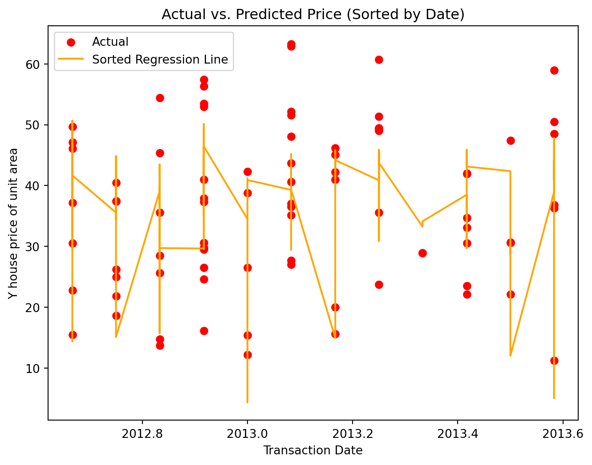

X = df.drop('Y house price of unit area', axis=1)Y = df['Y house price of unit area']scaler = StandardScaler()X_scaled = scaler.fit_transform(X)pca = PCA(n_components=2) X_pca = pca.fit_transform(X_scaled)plt.figure(figsize=(8, 6))plt.scatter(X_pca[:, 0], X_pca[:, 1], c=Y, cmap='viridis')plt.xlabel('Principal Component 1')plt.ylabel('Principal Component 2')plt.title('PCA Visualization')plt.colorbar(label='house price of unit area')plt.show()
In this analysis, a linear regression model is applied without accounting for the chronological order of dates within the dataset.
This visual representation showcases the comparison between actual and predicted house prices, arranged in chronological order. The scatter plot juxtaposes actual prices against predictions made by the regression model, sorted according to transaction dates. This ordering provides a clearer view of the model’s performance over time, indicating how well it predicts house prices across different chronological points.
sorted_indices = np.argsort(X_test_dates)sorted_dates = X_test_dates.iloc[sorted_indices]sorted_predictions = predictions[sorted_indices]plt.figure(figsize=(8, 6))plt.scatter(sorted_dates, Y_test.iloc[sorted_indices], color='red', label='Actual')plt.plot(sorted_dates, sorted_predictions, color='orange', label='Sorted Regression Line')plt.xlabel('Transaction Date')plt.ylabel('Y house price of unit area')plt.title('Actual vs. Predicted Price (Sorted by Date)')plt.legend()plt.show()

Plot the learning curve incorporating standard deviation (std) to provide a measure of score variability for both the training and cross-validation scores. Depict the training and cross-validation scores over varying training set sizes.
RandomForestRegressor model is employed to predict house prices over time. This illustrates the effectiveness of the RandomForestRegressor in capturing the complexities and nuances inherent in the dataset’s temporal fluctuations.
forest_model = RandomForestRegressor(n_estimators=100, random_state=42) forest_model.fit(X_train_without_date, Y_train)forest_predictions = forest_model.predict(X_test_without_date)years_test = X_test_datesplt.figure(figsize=(10, 6))plt.scatter(years_test, Y_test, alpha=0.7, c='blueviolet', label='Actual')sorted_indices = np.argsort(years_test)sorted_predictions = forest_predictions[sorted_indices]sorted_dates = years_test.iloc[sorted_indices].valuesprint(f"test transaction dates:\n{sorted_dates}")plt.plot(years_test.iloc[sorted_indices], sorted_predictions, color='deeppink', label='Predicted')plt.xlabel('Year')plt.ylabel('Y house price of unit area')plt.title('Actual vs. Predicted Price (Linear Regression)')plt.legend()plt.grid(True)plt.show()